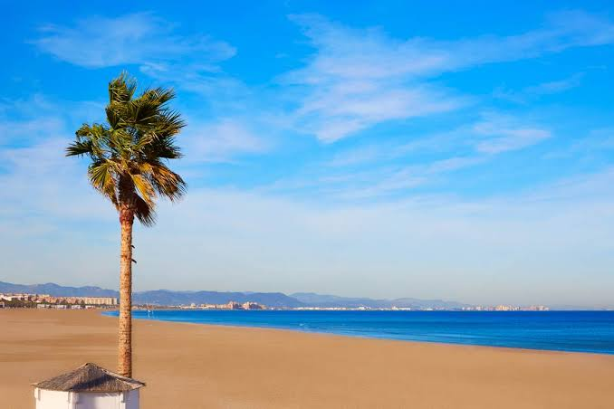
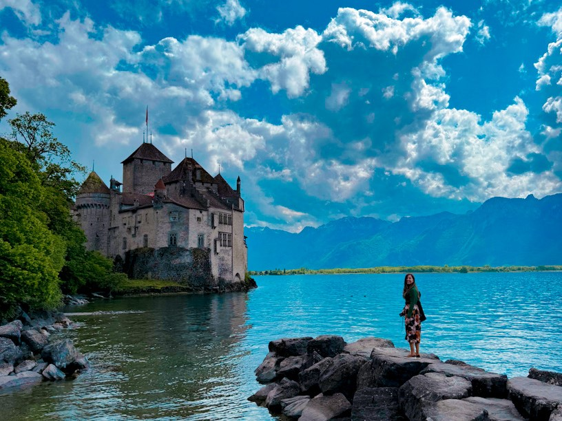

Valencia
Ir a la playa por la mañana, por la tarde a la piscina mientras vemos el atardecer y en la noche ver pelis, cocinar y dormir juntos, y que no falte comer el maiz que a ti te encanta .
Viajes
Destinos que quiero conocer contigo.

Ir a la playa por la mañana, por la tarde a la piscina mientras vemos el atardecer y en la noche ver pelis, cocinar y dormir juntos, y que no falte comer el maiz que a ti te encanta .
Los dos juntos en la ciudad del amor, paseando mientras conversamos y hacernos muchas fotos juntos y ir a cenar

Tenemos que ir si o si, estar los dos con la naturaleza y mucho mejor estando contigo y conocer muchas rutas y animales, eres la mejor compañia, estando solo de novios o ya en familia con hijos no me quejaria, porque seguira siendo un viaje especial si estás tu en el